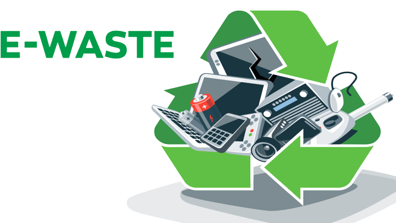

What is Ewaste?
Electronic waste, or more commonly known as E-Waste, refers to electronic products that ceased to have any value to their users. These electronic products can be new or old as long as it is being discarded by its owner, it becomes an electronic waste. The 6 main categories of e-waste includes: